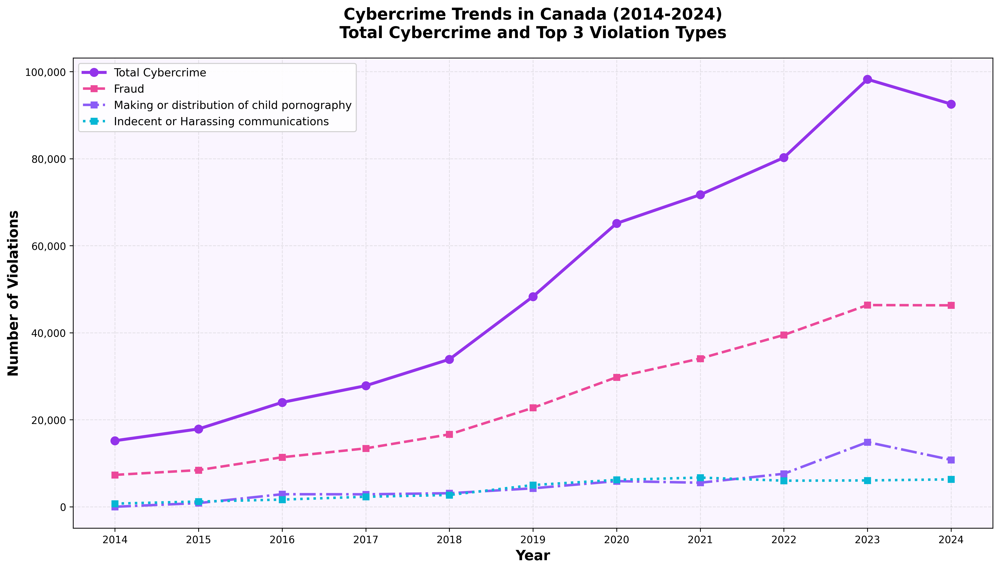
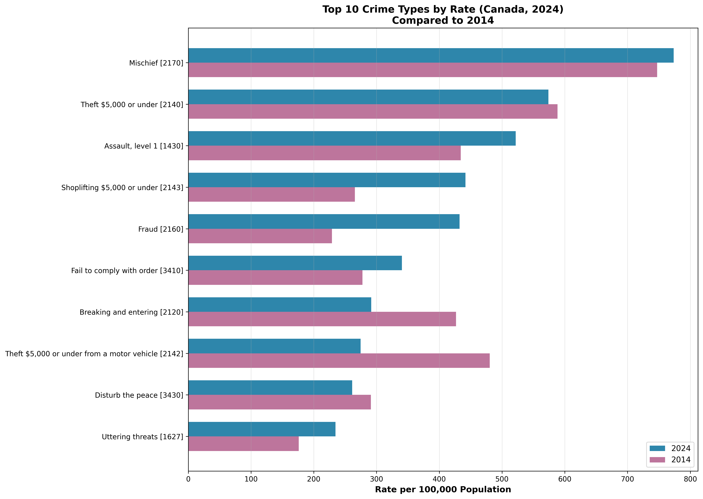
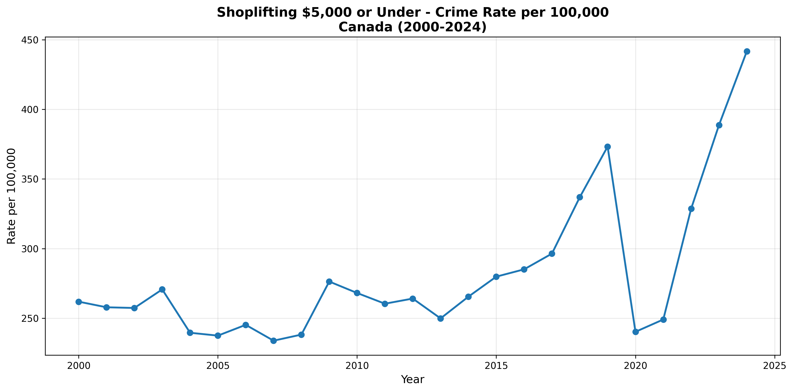
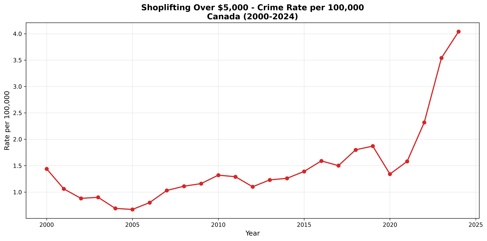
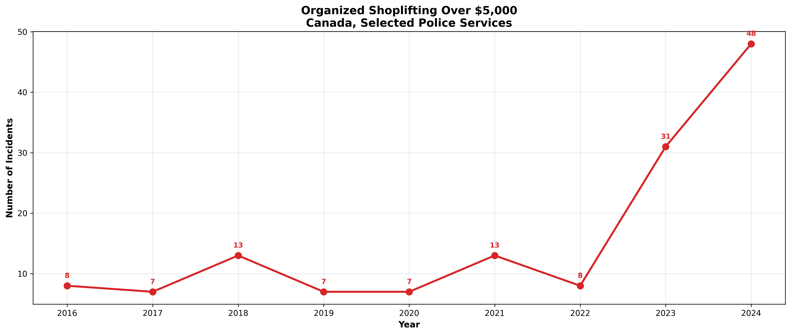
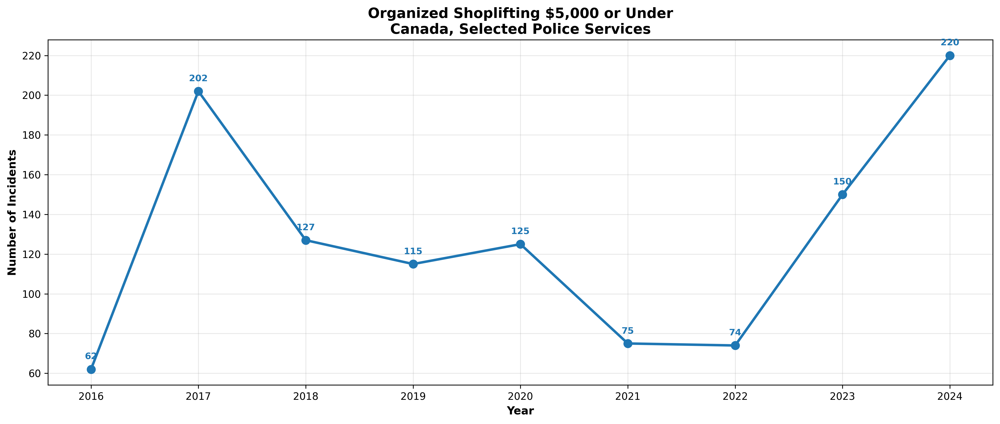

1. Crime Severity Index (1998-2024)
The Crime Severity Index measures both the severity and volume of Canadian crime. Sinking -34.5% from 1998 to 2024, the CSI indicates that Canada is dealing with a less severe crime problem overall than at the turn of the century. Going by simply the volume of crime, without considering severity, i.e., the crime rate , the amount of crime has also significantly decreased since its peak in 1991. Violent crime severity, however, has been steadily increasing since 2014, ticking down slightly in 2024.

2. Organized Crime Trends (2016-2024)
Since organized crime tracking began in 2016, Canada has seen a steady increase in violations, which grew by 207.8% from 2016 to 2024. Fraud, motor vehicle theft and drug trafficking were the most frequent violations by criminal organizations in 2024.

3. Cybercrime Trends (2014-2024)
Cybercrime has emerged as one of the fastest-growing categories of criminal activity in Canada. Total cybercrime incidents have increased by 509.6% from 2014 to 2024, reflecting the growing digitization of criminal activity and improved reporting mechanisms. Fraud was the most common cybercrime in 2024, followed by child porn making and distribution and by indecent or harassing communications.

4. Top 10 Crime Types by Rate (2024)
The chart below shows the top 10 crimes by rate (per 100,000 population) in 2024, compared to 2014 levels. Mischief was the most common crime, followed by Theft $5,000 or under and Assault, level 1. For the 2024 top 10, 2014-2024 growth was led by Fraud and by Shoplifting under $5,000, with the biggest declines in Theft $5,000 or under from a motor vehicle and Breaking and entering. Growth rates over the past ten years for each of the 2024 Top 10 crimes were: Mischief: +3.5%; Theft $5,000 or under: -2.5%; Assault, level 1: +20.2%; Shoplifting $5,000 or under: +66.4%; Fraud: +88.8%; Fail to comply with order: +22.6%; Breaking and entering: -31.6%; Theft $5,000 or under from a motor vehicle: -42.8%; Disturb the peace: -10.3%; Uttering threats: +33.3%.

5. Shoplifting Crime Rates (2000-2024)
From 2014 to 2024, shoplifting $5,000 or under has increased by 66.4%, while shoplifting over $5,000 has grown by 220.6%. Such sharp increases in shoplifting under and over $5,000 indicate a significant post-pandemic shift.


6. Organized Retail Crime
Organized retail crime (ORC) represents shoplifting incidents attributed to criminal organizations. From 2016 to 2024, ORC under $5,000 grew by 254.8%, while ORC over $5,000 grew by 500.0%. Triple-digit growth in both categories indicates a concerning increase, even sharper than the overall increase in organized crime. However, the actual numbers of annual ORC violations are quite low (see line charts). It is possible that some organized retail crime is instead captured as regular shoplifting due to challenges in proving an organized crime component. Depending on the StatCan methods used, it is also possible that shoplifting is undercounted if it occurred during the same incident as more serious violations (aggregate vs incident-based surveys, Uniform Crime Reporting Survey )


✓ Validation Summary
Ground Truth Tests: 19/19 passed
Data from Statistics Canada Tables: Organized crime 35-10-0062-01, Cybercrime 35-10-0001-01, General Crime 35-10-0177-01, Crime Severity Index 35-10-0026-01
Method and Disclaimer: Live data is pulled directly from Statistics Canada and validated against ground truth values. AI tools were used to design, code and evaluate this webpage, with comprehensive, reasonable efforts by the human building it to understand and validate the data analysis. Anyone relying on these statistics for material purposes should do their own analysis. The program is written in Python and HTML/CSS in a Colab Notebook and can be found on Github for replicability purposes.